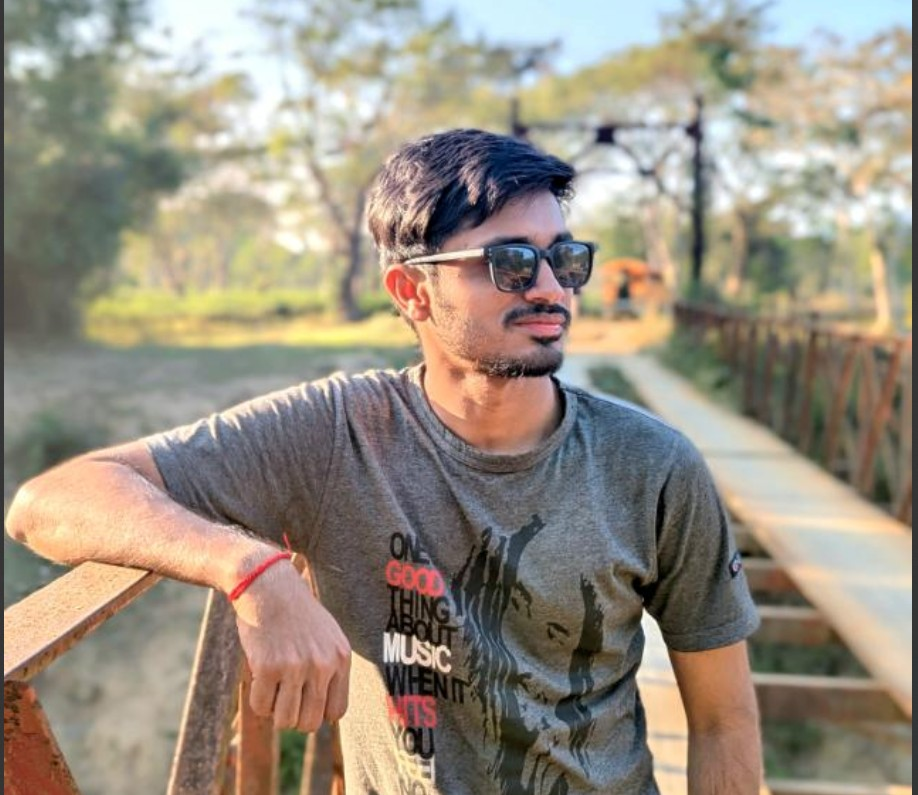
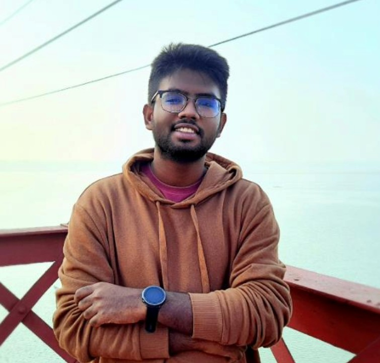
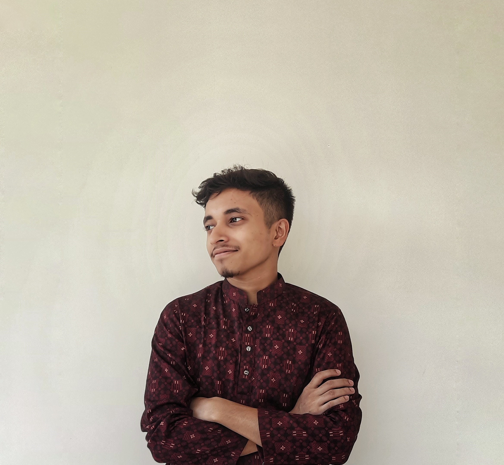
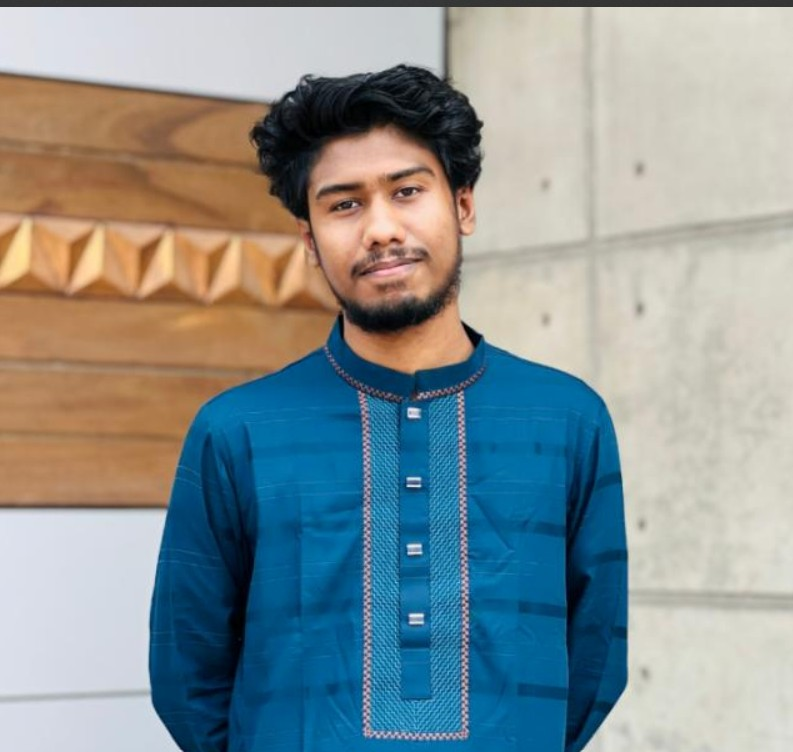

Shuvon Deb
My name is Shuvon Deb.I am a remarkable individual from Sylhet, Bangladesh, is someone who embodies
kindness, determination, and an
inspiring drive to make a positive impact. With a heart full of ambition and a passion for growth,
Shuvon is always
striving to achieve greatness while maintaining a warm, approachable personality. Whether it's through
personal
endeavors or contributions to the community, Shuvon’s presence is a true asset to those around them

Sakib Bin Tariq
My name is Sakib Bin Tariq.I am a kind-hearted and thoughtful individual from Pabna, is known for his
genuine nature and caring spirit. He has a strong
sense of admiration and respect for those around him, especially Lamia, whose presence in his life
inspires him to be
his best. With a heart full of sincerity and a deep sense of loyalty, Shuvon is someone who values
meaningful
connections and strives to bring positivity into every moment.

Ahsanul Azim Anas
My name is Ahsanul Azim Anas Anas.I am a warm and dedicated individual from Bogura, is known for his
thoughtful nature and strong character. With a
positive outlook on life and a genuine desire to help others, Anas brings light to every room he enters.
His kindness,
determination, and unwavering support for those around him make him a truly remarkable person.

Omor Faruk
My name is Omor Faruk.I am a brilliant and dedicated student from Chittagong, stands out as the
topper of his class. His hard work,
intelligence, and commitment to excellence set him apart as a true achiever. Beyond academics, Omor has
a kind heart,
and his feelings for his student, Tasnim, reflect the depth of his genuine nature and care for those
around him. His
ambition and thoughtful personality make him a remarkable individual